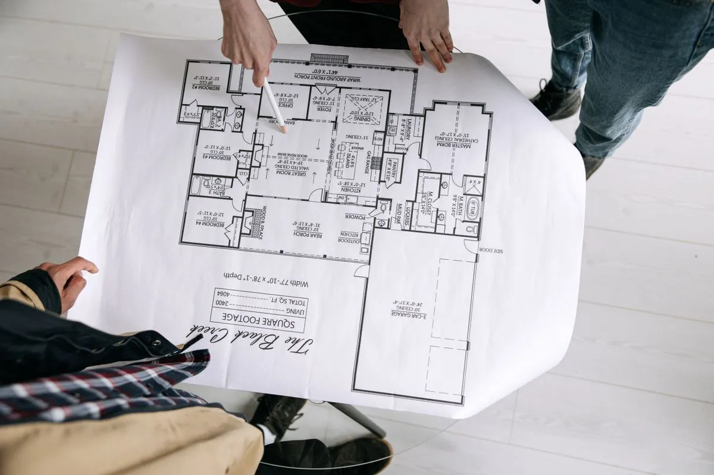

By Reno Rise. Published September 19, 2026. Last updated September 19, 2026. General planning information, not legal or engineering advice.

Whether a basement renovation needs a building permit in Toronto depends on the work, not on how big the project feels. Structural changes, new plumbing or heating, underpinning, a new entrance, or adding a second unit all need one, according to Toronto Building. Paint and flooring on a safe existing layout generally do not.
Permits are not the fun part of a renovation. Nobody ever hosted a housewarming to show off a permit. But this is the paperwork that keeps the fun part from being torn out.
What work needs a permit in Toronto?
The City’s “When Do I Need a Building Permit?” page (updated July 2026) says basement finishing needs a permit when it includes:
- Structural or material changes, such as removing or adding walls, new windows or doors, relocating openings or enclosing existing spaces.
- Installing or modifying heating and plumbing systems.
- Excavating and constructing foundations, including underpinning.
- Constructing a basement entrance.
- Adding a second dwelling unit.
What work might not need one?
The same page says finishing may not need a permit when it involves no structural or material alterations, creates no additional dwelling unit and does not include new plumbing. It also says installing a sump pump does not require a permit. If your plan is paint, flooring and lighting on an existing layout, you are probably in the clear. Probably is not a permit, so confirm.
Do secondary suites need a permit?
Yes. Adding a second unit is a permit project. Toronto’s secondary suite application guide describes scaled drawings, plans showing fixtures and smoke and carbon monoxide alarms, cross-sections, specifications and a rental renovation licence screening form. The legal secondary suite guide walks through the rest.
Who is responsible for the permit?
You are. As the property owner, compliance is yours, and Toronto Building warns that missing permits can lead to construction delays, legal action and removal of completed work. A professional can apply on your behalf, but get that in writing.
Here is the hot take. The cheapest time to sort out a permit is the first time you think about it. Unpermitted work is a problem that introduces itself eventually, usually at a sale or an insurance claim, and never at a convenient time.
Statistics Canada estimated that residential construction accounted for 32.7% of underground economic activity in 2023, the largest share of any industry (Statistics Canada, March 2025). Translation: “we can skip the permit, and pay cash” is a sentence with a lot of company. Do not join it.
How do you check before you start?
- Describe your exact scope to Toronto Building or a qualified designer before work begins.
- Ask each professional who applies for permits and who books inspections.
- Keep permits, inspection records and drawings with your house documents.
Get this part right and the rest of the project gets calmer. Inspectors become a checkpoint instead of a surprise, and your house has a paper trail that will still make sense in ten years.
General information, not legal or engineering advice. Confirm your project with Toronto Building and a qualified designer or contractor. Reno Rise does not issue permits or give code advice.
Frequently asked questions
Do I need a permit to finish my basement in Toronto?
Only if the work includes things like structural or material changes, new plumbing or heating, underpinning, a basement entrance, or a second unit. Finishing with none of those may not need a permit, but confirm with Toronto Building.
Do I need a permit to replace basement windows in Toronto?
Toronto Building lists new windows and relocated openings among work that needs a permit. A like-for-like swap is different from cutting a new opening, so describe your exact work to the City.
Do I need a permit for a sump pump in Toronto?
Toronto Building says installing a sump pump does not require a building permit. Related work, such as new drains, can be different.
What happens if I renovate my basement without a permit?
Toronto Building warns of construction delays, legal action and removal of work already completed. It can also cause problems when you sell or make an insurance claim.
Who applies for the permit, the homeowner or the contractor?
The homeowner is responsible for compliance, but a professional can apply on your behalf. Agree who does what in writing before work starts.
Request a Basement Assessment
Share a few details about your basement and your plans. Reno Rise reviews what you send and, where there is a suitable fit, may connect you with an independent professional. This does not confirm an appointment, a quote, an approval or a match.